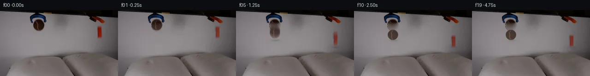

![首帧]()

Round 00
2026-11-04T17:23:59.484843+00:00像素候选变化代码 +287/−0inspection 更新
pixels 9d25b1e4b588f46d · code eec122e506f4d192
查看本轮 generate.py 真实 diff
--- previous/generate.py
+++ current/generate.py
@@ -0,0 +1,287 @@
+"""PixelWorld-Text case_0001_attempt_01 generator.
+
+Scene (from numeric inspection of first_frame.png):
+two grabbers above two pillows release a brown tennis ball (left, blue ring
+gripper) and an orange rounded block (right, red claw). Both fall straight
+down onto the pillow tops, compress the fabric slightly, and settle.
+
+Everything is local pixel math: sprite extraction from frame 0, diffusion
+inpainting of vacated pixels, analytic gravity, soft alpha compositing
+(sub-frame samples for motion blur), analytic contact shadows and pillow
+dimples. Frame 00 is the untouched first frame.
+"""
+from pathlib import Path
+import numpy as np
+from PIL import Image, ImageDraw
+from scipy.ndimage import gaussian_filter, binary_dilation
+
+import artifact_io
+
+CASE = Path(__file__).parent
+TMP = CASE / ".tmp"
+TMP.mkdir(exist_ok=True)
+rng = np.random.default_rng(7)
+
+# ---------------------------------------------------------------- geometry
+H, W = 144, 256
+DT = 0.25
+G = 72.0 # px/s^2
+
+BALL_CX, BALL_CY0, BALL_R = 84.5, 33.0, 11.2
+BALL_REST_CY = 54.0 # bottom rests at y ~65
+BLOCK_X0, BLOCK_Y0 = 210.5, 34.5
+BLOCK_REST_Y = 54.0 # top of block when settled (bottom ~80)
+
+# per-frame y positions (ball center, block top)
+ball_cy = np.array([33.0, 33.0, 33.0, 35.2, 41.8, 52.6, 54.3,
+ 51.4, 53.5, 54.4, 53.9] + [54.0] * 9)
+block_y = np.array([35.0, 35.0, 35.0, 37.2, 43.8, 54.6, 55.2,
+ 53.3, 54.5, 55.0, 54.6] + [54.0] * 9)
+# squash at contact (scaleY); ball F6 strong, light secondary at F9
+ball_sy = np.ones(20); ball_sy[[6]] = 0.90; ball_sy[[9]] = 0.96
+ball_sx = np.ones(20); ball_sx[[6]] = 1.07; ball_sx[[9]] = 1.03
+block_sy = np.ones(20); block_sy[[6, 9]] = 0.95
+
+# ----------------------------------------------------------- load frame 0
+f0 = np.asarray(Image.open(CASE / "first_frame.png").convert("RGB"))
+assert f0.shape == (H, W, 3)
+
+# ----------------------------------------------------------- ball sprite
+# full disk, top cap (occluded by gripper prongs in f0) synthesized by
+# mirroring the lower hemisphere across BALL_CY0
+BX0, BY0, BX1, BY1 = 71, 20, 98, 46
+ball_rgb = np.zeros((BY1 - BY0, BX1 - BX0, 3), np.float32)
+ball_a = np.zeros((BY1 - BY0, BX1 - BX0), np.float32)
+ys = np.arange(BY0, BY1)[:, None] + 0.5
+xs = np.arange(BX0, BX1)[None, :] + 0.5
+dist = np.hypot(xs - BALL_CX, ys - BALL_CY0)
+cov = np.clip(BALL_R + 0.5 - dist, 0, 1) # anti-aliased coverage
+ball_a[:] = cov
+for iy, y in enumerate(range(BY0, BY1)):
+ for ix, x in enumerate(range(BX0, BX1)):
+ if cov[iy, ix] <= 0:
+ continue
+ if y >= 28: # observed body in f0
+ ball_rgb[iy, ix] = f0[y, x]
+ else: # hidden cap: mirror fill
+ ym = int(round(2 * BALL_CY0 - y))
+ src = f0[ym, x].astype(np.float32)
+ src *= 0.92 # slight shade under ring
+ ball_rgb[iy, ix] = src
+# dark rim band wherever the disk edge is
+rim = np.clip((dist - (BALL_R - 1.4)) / 1.4, 0, 1) * cov
+rim_col = np.array([34, 16, 9], np.float32)
+ball_rgb = ball_rgb * (1 - 0.75 * rim[..., None]) + rim_col * (0.75 * rim[..., None])
+ball_rgb = np.clip(ball_rgb, 0, 255)
+# mask of the ball as seen in frame 0 (visible body only)
+ball_visible = np.zeros((H, W), bool)
+yy, xx = np.mgrid[0:H, 0:W]
+ball_visible = (np.hypot(xx - BALL_CX, yy - BALL_CY0) <= BALL_R + 0.4) & (yy >= 28)
+
+# ---------------------------------------------------------- block sprite
+# rounded-rect alpha shaped from the data, colors sampled from f0
+BW0, BW1, BH0, BH1 = 209, 222, 33, 63
+block_rgb = np.zeros((BH1 - BH0, BW1 - BW0, 3), np.float32)
+block_a = np.zeros((BH1 - BH0, BW1 - BW0), np.float32)
+for iy, y in enumerate(range(BH0, BH1)):
+ # background reference: cols just outside the object
… diff truncated; 200 more lines …